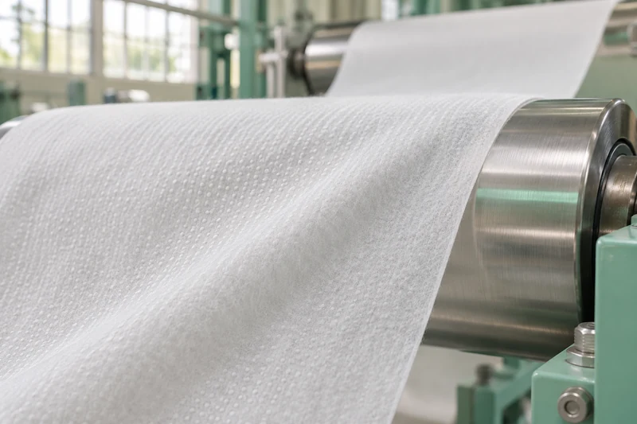

自动化生产
6 条湿巾生产线、2 条棉柔巾生产线，覆盖单片、多片及 80 片婴儿湿巾等包装规格。
 产线放卷
产线放卷
巾面纹理 厚度检测
厚度检测6 条湿巾生产线、2 条棉柔巾生产线，覆盖单片、多片及 80 片婴儿湿巾等包装规格。

配备实验操作空间与培养设备，支持卫生用品生产过程中的质量管理。
2023 年取得消毒产品生产企业卫生许可证，2024 年通过 ISO 9001:2015 质量管理体系认证，认证范围为卫生用品（纸巾、湿巾）的生产。
沟通产品用途、材质、每包片数与采购数量。业务联系人为苏宏。